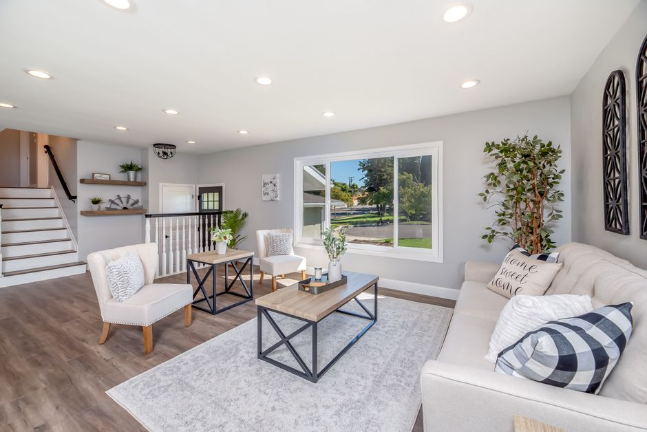
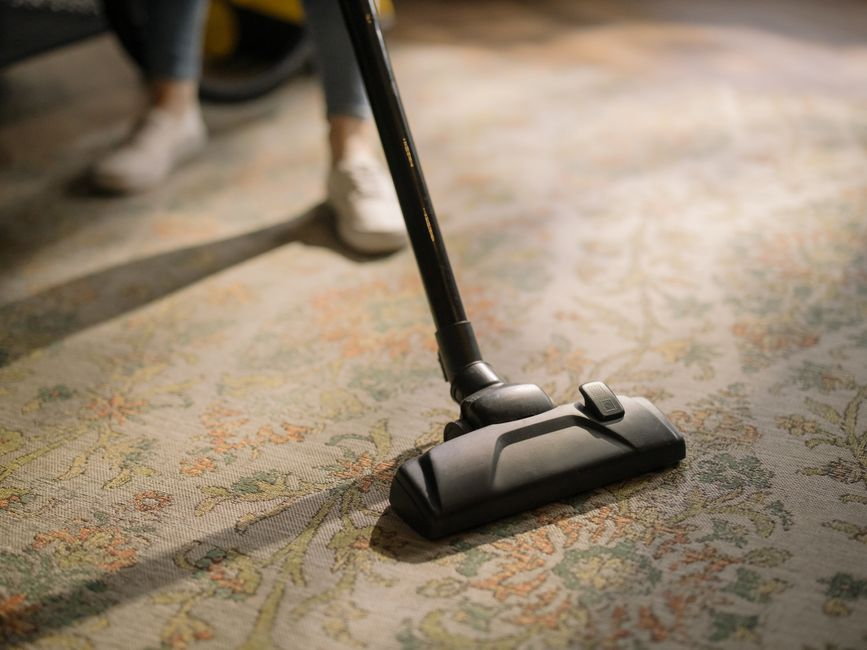

Restoring the natural harmony of your home.
Experience the premier professional house cleaning service that treats your space with the utmost care and our ethical partners with the utmost respect.
A cleaner home, an ethical choice.
Welcome to Decodon Scalero, the premier destination for discovering top-tier professional house cleaning service options. We understand that your home is your sanctuary, and maintaining it shouldn't feel like a second job. Our platform acts as a promotional bridge, connecting you with the highly respected Well-Paid Maids—a maid service that ensures your living spaces are impeccably maintained while paying living wages to its staff.
Whether you are looking for routine upkeep, a rigorous seasonal refresh, or assistance transitioning between properties, we guide you toward services that value both your home and the hard-working professionals who clean it. Embrace the peace of mind that comes from a spotless environment and a socially responsible choice.


Exceptional Care for Every Room
Discover the specialized cleaning services designed to fit seamlessly into your lifestyle.

Recurring Cleaning
Keep your sanctuary consistently pristine with a reliable recurring cleaning schedule. Life gets busy, but your living space doesn't have to reflect that chaos. By establishing a weekly, bi-weekly, or monthly maid service routine, you ensure that dust, dirt, and clutter never accumulate. Enjoy the immense relief of coming home to a professionally maintained environment every single day, allowing you to focus your time and energy on what truly matters.

Deep Cleaning
Sometimes, your home requires an intensive reset to truly shine. A thorough deep cleaning reaches the hidden corners, baseboards, and forgotten crevices that standard tidying misses. This rigorous service eliminates deeply embedded grime, allergens, and buildup, restoring a fresh and healthy atmosphere to every room. It is the perfect solution for spring cleaning, post-renovation recovery, or preparing your home for special gatherings with family and friends.

Move-Out Cleaning
Relocating is notoriously stressful, but leaving your old home spotless doesn't have to be. A dedicated move-out cleaning ensures that every inch of the property is scrubbed, sanitized, and ready for its next occupants or a final landlord inspection. From wiping down the insides of cabinets to polishing bathroom fixtures, this comprehensive service helps secure your deposit and leaves a lasting positive impression. Focus on your new chapter while the professionals handle the heavy lifting.
Frequently Asked Questions
What exactly is included in a professional house cleaning service? +
A standard professional house cleaning service typically involves comprehensive dusting, vacuuming, mopping, and the complete sanitization of essential areas like bathrooms and kitchens. It is designed to maintain the general hygiene and pristine appearance of your home on an ongoing basis.
How is a deep cleaning different from a regular maid service? +
While a regular maid service handles surface-level upkeep, deep cleaning involves meticulous attention to detail. It targets areas that aren't typically covered in routine visits, such as the insides of appliances, baseboards, high shelves, and hidden corners, effectively removing long-term buildup.
Do I need to provide supplies for my recurring cleaning appointments? +
No, you do not need to worry about stocking up on products. The professional teams arrive fully equipped with high-quality, effective cleaning solutions and tools necessary to perform a thorough job during every recurring cleaning session.
Can I schedule a move-out cleaning if the house is entirely empty? +
Absolutely. An empty house is actually the ideal scenario for a comprehensive move-out cleaning. Without furniture in the way, the cleaners can easily access every inch of the floors, walls, and cabinets to ensure the property is perfectly prepared for the next resident.
Why should I choose an ethical maid service? +
Choosing an ethical maid service ensures that the professionals caring for your home are paid fair, living wages and treated with the respect they deserve. This commitment not only supports the local community but also results in higher-quality work from a dedicated, valued staff.
Voices of Cleanliness
"Setting up recurring cleaning was the best decision I made this year. Knowing that my house will be professionally maintained every two weeks has taken a massive weight off my shoulders. The attention to detail is remarkable."
"I hired them for a move-out cleaning because I simply didn't have the time or energy after packing. They scrubbed the apartment top to bottom, and my landlord was incredibly impressed. Worth every single penny."
"I specifically searched for an ethical maid service, and finding this platform connected me with exactly what I needed. The deep cleaning was thorough, and I feel great knowing the staff are treated fairly."
Request Information
Fill out the form below to learn more about scheduling your professional house cleaning service.